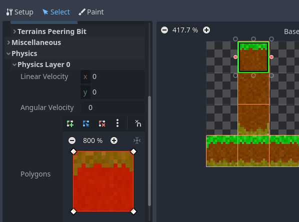
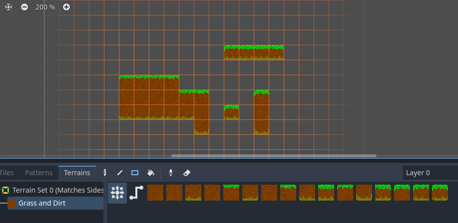
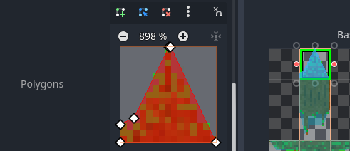

Day 2 - Adding some tiles and some physics
So today we're going to achieve these goals:
- Zelia will become subject to the laws of physics
- She will move right and left by running
- She will jump
- A camera will follow her around
But before we can do that, we need some surfaces for her to run around on.
Learning goals
Before I could make this day's tutorial I had to read up on and watch:
- Using TileMaps
- Terrain Autotiling and Alternative Tiles ~ Godot 4 Tutorial for Beginners
RigidBody2D- CharacterBody2D platformer movement
If you lost your project or want to start from here, I tagged the project after day one so you could clone or download it from github
Addings Tiles in a TileMap
First make sure you have some surface assets ready. Create a new resource dir called surface_maps and put the contents of this zip in it, including subdirs:

Create the Tilemap
Go Scene > New Scene and create new scene of type TileMap. Then rename it to World by double clicking on its node.
Let's follow the steps in Using TileMaps and the video.
From the Inpector do:
- Set the
Cell Quadrantproperty to15 - Create a new
TileSet - Set the
xandyof theTile Sizeproperty to15px - Create a
Physics Layer - Create a
Terrain Set - Set the
Modeproperty toMatch Sides - Add a
Terrainand give it a bright green color - Set the
Nameproperty toGrass and Dirt
It should look like this now:

Making an Atlas of an image
Next open the Tileset pane on the bottom and add an Atlas using the +-button.
- Set the
Textureproperty for thisAtlasby loading the resourceres://surface_maps/grass-and-dirt/1.png. - Pick
Yeswhen offered to automatically detect tiles: - Set the
Nameproperty tograss-and-dirt

Add the Terrain and Physics Layer to the tiles
- Now choose the
selecttab - select all the tiles.
- Pop open
> Terrains. - Set
Terrain Setto0(the number found by hovering over theInspector > World > Terrain Setsproperty) - Set
Terrainto0(the number found by hovering over theInspector > World > Terrain Sets > Terrainsproperty) - Pop open
Physics > Physics Layer 0(we just created that)
Give the tiles their collision area
To Set up the collision area of a tile you can select one at a time and press the F-key.
This will make a square you can change into another type of polygon (we'll do that later):

Apply this to all 15 tiles.
Set the Terrains Peering Bit for each tile
You can paint this! (it's in the video).
- Go to the
Painttab. - Select a property editor: Terrains
- Pick
Terrain Set 0forTerrain Set - Pick
Grass and DirtforTerrain - Now paint over the tiles so they look like this:

We need one Alternative Tile
There is one type of tile missing, the one that has neighbors on all four sides.
We can achieve this by making an Alternative Tile.
- Go to
Select - Select the tile that is all dirt (x = 15 and y = 15)
- Right click on it
- Choose
Create an Alternative Tile - Press
Fto give it a collision rect - Go back to
Paint - Click on the new tile
- Paint it to neighbour all sides:

Paint some terrain
If we did all this correctly, now we should be able to paint some Tiles on the viewport.
- Choose
TileMapon the bottom of theTilestab - Choose the
Terrainstab - Pick
Terrain Set 0 > Grass and Dirt - Choose the
Rectanglesdraw mode - Drag a rectangular area in the
World-scene viewport.
All this work should allow you to draw these shapes into the viewport in no time:

Don't forget to save!
I almost forgot myself. Press Ctrl-S to save the World-scene into rest://world.tscn
Technical debt 3
After reading up about TileMap - including developers' opinions about it, I concluded that at this point I can safe create one TileMap-scene, call it World, and assume we will be making all the level content in it.
This violates some of the SOLID principles, i.e. it does not separate the concern of tiles from the concern of a map/level/world, but we will accept this potential technical debt.
Import some more Atlases
If you carefully follow the same recipe you can of course create more Terrains for Terrain Set 0 this way.
Just one screenshot hint for the one I added res://surface_maps/tree-trunk/1.png. It's about adjusting the collision area by manipulating the initial rectangle after pressing F:

Add the Player to the World scene
Let's add the Player-node as an instance into this World-scene.
Just drag her scene file from the FileSystem tab into the tree view: res://player/player.tscn, like in the first tutorials.
Test the current scene.
Actually make the World-scene the main scene by right clicking on world.tscn in the FileSystem tab and picking Set as Main Scene.
Use F5 or your OS's shortcut to run the entire project.
There is a lot missing, we can't leave Zelia just hanging there! (ha ha ha).

Make her subject to the laws of physics.
Like we speculated during day 1, we need to change her Node Type if we do not want to write all the physics ourselves.
And I don't. I did it last time and it took me weeks and weeks of tweaking; and there are sure to still be bugs hanging around.
First attempt with RigidBody2D
In my first attempt I actually tried to make Player extend from RigidBody2D and failed to get a good enough grip on what was happening.

Second attempt with CharacterBody2D
For my second attempt I read up on CharacterBody2D platformer movement. Let's try that out now.
- Go to the
Playerscene view (the one where she is the root node). - Right click on
Player - Pick
Change type - Choose
CharacterBody2D - Edit
res://player/player.gdand change the extends line:
extends CharacterBody2D # this first line changed!
Test by running the project. That changed nothing (for now).
Adapting her script to CharacterBody2D
So let's try this out: CharacterBody2D platformer movement.
Much has change, feel free to copy/paste this first and see if it works, but you probably know the most imporant law of cheating with Stackoverflow: type it out yourself to learn better.
extends CharacterBody2D
enum Orientation { LEFT, RIGHT }
enum MovementState { IDLE, RUNNING, AIRBORNE }
# I removed the exports for now, no debugging needed at the moment
var movement_state : int
var orientation : int
# Get the gravity from the project settings so you can sync with rigid body nodes.
# NOTE: I changed the default from 980 to 1300, Zelia jumps high yet falls fast.
var gravity = ProjectSettings.get_setting("physics/2d/default_gravity")
# The most realistic speed for Zelia's feet
var speed = 120.0
# Funnily the original game had jump_speed set to -4.0 and gravity to 13.0
var jump_speed = -400.0
# No changes here
func _ready():
movement_state = MovementState.IDLE
orientation = Orientation.RIGHT
$AnimatedSprite2D.play()
# Changed _process to _physics_process
func _physics_process(delta):
# Apply the gravity.
velocity.y += gravity * delta
# Update the MovementState based on the collisions observed
if movement_state == MovementState.AIRBORNE:
# If she's airborne right now
if is_on_floor():
# .. and hits the floor, she's idle
movement_state = MovementState.IDLE
elif Input.is_action_pressed("Run right"):
# Else you can still move her right
orientation = Orientation.RIGHT
velocity.x = speed
elif Input.is_action_pressed("Run left"):
# ... and left
orientation = Orientation.LEFT
velocity.x = -speed
else:
velocity.x = 0
else:
# Else we are not airborne right now
if Input.is_action_pressed("Run right"):
# so we run right when run right is pressed
orientation = Orientation.RIGHT
movement_state = MovementState.RUNNING
velocity.x = speed
elif Input.is_action_pressed("Run left"):
# .. and left ...
orientation = Orientation.LEFT
movement_state = MovementState.RUNNING
velocity.x = -speed
else:
# and stand idle if no x-movement button is pressed
velocity.x = 0
movement_state = MovementState.IDLE
# Handle Jump, only when on the floor
if Input.is_action_just_pressed("Jump") and is_on_floor():
$JumpSound.play()
movement_state = MovementState.AIRBORNE
velocity.y = jump_speed
# This code has not changed
match (movement_state):
MovementState.RUNNING:
$AnimatedSprite2D.animation = "running"
# This was added
MovementState.AIRBORNE:
$AnimatedSprite2D.animation = "jumping"
_: # MovementState.IDLE
$AnimatedSprite2D.animation = "idle"
# Neither has this
if orientation == Orientation.LEFT:
$AnimatedSprite2D.flip_h = true
else:
$AnimatedSprite2D.flip_h = false
# Yet this is new
move_and_slide()
And it just works! Frankly: it's much better than the original.
If you are as new to Godot and perfab 2D physics engines as I am, make sure you read the tutorial and the docs carefully and try to write the script yourself:
Change the gravity setting
As I my mentioned in the code comments, I changed the Project's default gravity setting from 980 to 1300:
- Go to
Project > Project Settings - Click on
Filter Settings - Type in
gravity - Pick
Physics > 2D - Set
Default Gravityto1300
Make it scroll with Camera2D
The original Zelia never ever left the center of the screen; everything else just moved.
I read somewhere that it would be easy: just add a Camera2D child node to the Player-node.
This evening my son asked me for a demo, so I proposed to him we check it out.. He was amazed: "De dingen waarvan je verwacht dat ze kort duren om te maken duren gewoon kort om te maken!" (That is Dutch for: "The things you'd expect a short time to make actually take a short time to make!").
- Right click the
Player-node - Click
Add Child Node - Pick
Camera2D - Start the game
Voilá.
Dead code Code cleanup
We left some dead code. Let's fix that before wrapping up our day.
In our new script we to away the need for our MockAirTimer.
So let's remove it.
Removing the _on_mock_air_timer_timeout signal
Just to be sure, let's disconnect the signal we made first:
- Select the
MockerAirTimernode in the treeview of thePlayerscene - Click the
Nodetab next toInspector - Right click
.. ::_on_mock_air_timer_timeout() - Choose
Disconnect

Remove MockAirTimer itself
Right click on the MockAirTimer-node in the tree view and delete it.
Make sure all references to it in player.gd are gone as well, or you'll get a reference error.
Technical debt 4
We have some poorly chosen names.
I am we can do better than "Run Right" and "Run Left" knowing that they are already doubling for changing direction while airborne.
But let's set some goals for tomorrow: